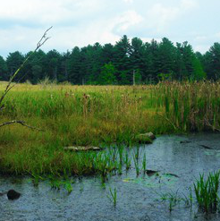

Hope for the Future Came My Way Today
Monthly Feature, January, 2016. Catherine Owen Koning
Hope for the Future Came My Way Today
Monthly Feature, January, 2016.
By Catherine Owen Koning

Hope for the future came my way today, as I was reviewing stories that have been sent to me for a book I am writing with Sharon Ashworth of Lawrence, Kansas. Our book focuses on wetlands, and it is easy to get depressed when learning that over half of the wetlands in the lower 48 states of the US have been destroyed. People have traditionally viewed wetlands as places to avoid, go around, or build over.
Wetlands are challenging - there's mud and bugs and dense vegetation. Just moving around isn't easy. So the stories are often quite entertaining. A botanist from Illinois described the hilarity of a group of volunteers trying to sleep out overnight on a floating platform in a bog. A student from Michigan recalled watching his chest waders fill with water as lightning cracked overhead and leeches swam into his shirt; others shared similar stories of being stuck in the muck, lost in the bog or snarled in the shrubs.
Perhaps because these areas are difficult to visit, people don't know them, so they feel no loss when the lowlands are filled, drained, or dredged. In contrast, so many of the scientists and explorers we interviewed have, like me, seen the wondrous field sites that they spent years working in destroyed and degraded, and some have spent their professional life documenting the decline of an awe-inspiring marsh creature. Noting that his favorite wetlands, the Atlantic white cedar swamps, have declined precipitously and don't seem to be growing back in restored areas, Rob Atkinson of Christopher Newport University says, "One of the things we see in a changing planet is loss, of ecosystems and species. How do we cope, how do we grieve?"
But there are signs that times are changing. Jason Smith, a wetland consultant from Pennsylvania told us about the frustration of a young couple who was forced to fill out paperwork and lay out cash for wetland permits in order to fill part of a wetland for a driveway to their dream home. With the discovery of a rare orchid, their anger evaporated, and they became enthusiastic stewards of the habitat. Increasingly, people understand the importance of wetlands and take action. Dozens of citizen organizations, individuals and community groups devote time, energy and their own money to save forested swamps from the bulldozer, protect fens from the ravages of pollution, remove invasive species from degraded marshes and, always, to educate the public about the cool adaptations and the ecological importance of these intricate ecosystems. "So many times we have seen beautiful natural areas and wetlands destroyed in the path of progress," says Jason. "Outcomes like this keep me interested, knowing that what I am doing actually makes a difference and is worth fighting the good fight!"
Telling these stories of tribulations and triumphs, discoveries and delusions, is a way to both grieve loss and celebrate success. By honoring the life of a shrub swamp or bog, and by committing to educate others about the joys of exploration and revelation in the wild, I believe we help stem the tide of loss. In so doing, we hope to inspire people to explore and enjoy nature. Because we will only fight for what we love, and we can only love what we know.
That's why it is an act of hope to teach ecology and to share stories of the wild world.